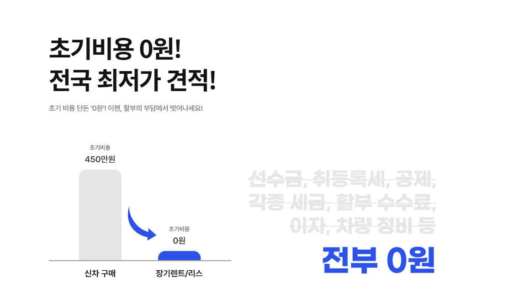
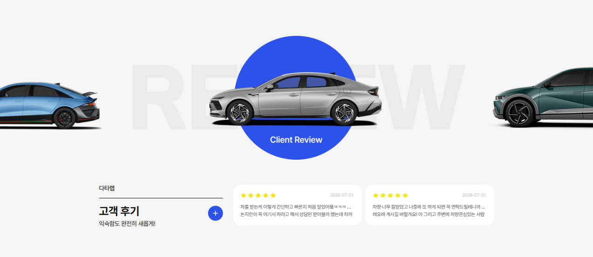

다타랩를 통해 신차 장기렌트나 자동차 리스를 알아볼 때는 가장 낮게 표시된 월 납입금만 보지 않는 것이 중요합니다. 견적마다 차량 사양과 계약기간, 초기비용과 주행거리 조건이 다르면 실제 비용을 정확하게 비교하기 어렵습니다. 원하는 차량과 이용계획을 먼저 정한 뒤 동일한 조건으로 견적을 맞추고 계약 종료 시점까지 발생할 수 있는 비용을 확인하세요.
특히 장기렌트와 리스는 계약기간이 길고 중도해지 시 비용이 발생할 수 있기 때문에 상담 단계에서 들은 조건을 최종 계약서와 견적서에서 다시 확인하는 과정이 중요합니다. 월 납입액이 낮아 보이는 견적일수록 선납금, 약정주행거리, 정비 제외 여부와 종료 시 비용을 꼼꼼하게 확인해야 합니다.
저신용 장기렌트를 알아볼 때 먼저 확인할 점
신용점수가 낮거나 금융이력이 부족하다고 해서 모든 장기렌트 조건이 동일하게 적용되는 것은 아닙니다. 렌터카 회사마다 심사기준과 요구자료, 보증금 또는 보증보험 조건이 다를 수 있습니다. 승인 여부만 서둘러 확인하기보다 초기비용과 월 렌트료, 계약기간, 중도해지 비용까지 비교해야 실제 부담을 판단할 수 있습니다.

무보증 승인이 어렵다면 어떤 조건이 제시될까요?
무보증이 어려운 경우 보증금 납입, 보증보험 가입, 차종과 계약기간 조정 등의 조건이 제시될 수 있습니다. 보증금은 계약 종료 후 정산을 거쳐 반환될 수 있지만 선납금은 일반적으로 반환되지 않으므로 두 금액을 반드시 구분해야 합니다.
월 납입금이 만들어지는 구조
월 납입금은 차량가격을 계약개월로 단순히 나눈 금액이 아닙니다. 차량가격과 옵션, 계약기간, 약정주행거리, 예상 잔존가치, 보험조건, 정비상품, 보증금과 선납금 등이 종합적으로 반영될 수 있습니다. 월 납입금이 낮더라도 초기 선납금이나 종료 시 인수금액이 높다면 총비용은 커질 수 있습니다.
함께 확인하기: 카슐랭장기렌트 계약조건과 비용구조을 비교해보세요. →보증금·선납금·무보증 차이
보증금은 계약이행을 담보하기 위해 맡기는 예치금으로 종료 후 미납금과 손상비용 등을 정산한 뒤 반환될 수 있습니다. 선납금은 렌트료 일부를 미리 지급하는 금액으로 월 납입액을 낮출 수 있지만 일반적으로 반환되지 않습니다. 무보증은 큰 초기 납입금 없이 진행하는 방식이지만 심사결과에 따라 승인조건이 달라질 수 있습니다.
| 구분 | 성격 | 확인할 점 |
|---|---|---|
| 무보증 | 큰 초기 납입금 없이 진행 | 심사결과와 월 납입액 |
| 보증금 | 계약이행을 위한 예치금 | 반환·정산 조건 |
| 선납금 | 렌트료 일부 선지급 | 일반적으로 반환되지 않음 |
계약기간을 정하는 방법
계약기간이 길어지면 월 납입금이 낮아질 수 있지만 중도해지 부담이 커질 수 있습니다. 차량을 몇 년 동안 사용할지, 신차 교체주기가 어느 정도인지, 계약 종료 후 인수할지 반납할지를 먼저 정하면 계약기간을 선택하기 쉽습니다.
약정주행거리와 초과운행 정산
약정주행거리는 출퇴근과 주말 이용, 장거리 여행, 업무용 운행을 합산해 정해야 합니다. 실제 주행거리가 약정을 초과하면 계약 종료 시 추가 정산금이 발생할 수 있으므로 현재 사용량보다 지나치게 낮게 선택하지 않는 편이 안전합니다.

보험과 사고 자기부담금
장기렌트는 렌터카 회사가 정한 자동차보험 조건이 적용될 수 있습니다. 운전자 연령과 범위, 대인·대물 보장, 자차손해 자기부담금, 사고 시 대차 제공 여부를 확인해야 합니다. 가족이나 직원이 함께 운전한다면 계약 전 운전자 범위를 정확히 등록해야 합니다.
함께 확인하기: 아이엠카 신차장기렌트카무보증·초기비용 확인을 비교해보세요. →정비 포함 상품 선택 기준
정비상품은 엔진오일과 필터, 타이어와 브레이크 패드 등 포함범위에 따라 구성이 달라질 수 있습니다. 차량관리를 직접 하기 어렵거나 주행량이 많다면 정비 포함 상품이 편리할 수 있고, 주행량이 적다면 정비 미포함 견적과 총비용을 비교하는 것이 좋습니다.
초기 납입금과 계약 전체 납부액, 보험·정비, 종료 시 비용을 함께 계산해야 실제 부담을 비교할 수 있습니다.
중도해지와 계약승계
장기계약을 중간에 해지하면 위약금이 발생할 수 있습니다. 위약금 산식은 상품과 남은 계약기간에 따라 달라질 수 있으며 계약 초기일수록 부담이 커질 수 있습니다. 계약승계는 새 이용자의 심사와 회사의 승인이 필요하고 별도 수수료가 발생할 수 있습니다.
계약 종료 시 반납·인수
반납을 선택하면 차량 외관손상과 사고수리, 초과주행 정산기준을 확인해야 합니다. 인수를 고려한다면 계약서의 인수금액과 취득 관련 비용, 같은 연식과 주행거리의 중고차 시세를 비교해야 합니다.
함께 확인하기: 세모카잔존가치와 계약 종료조건을 비교해보세요. →최종 견적 비교 체크
차량 연식·트림·옵션, 계약기간, 약정주행거리, 보증금·선납금, 월 납입액의 부가세 포함 여부, 보험과 정비, 중도해지 위약금과 인수금액을 같은 표에 놓고 비교해야 합니다. 상담 중 안내받은 조건이 최종 계약서에도 동일하게 기재됐는지 확인하세요.

심사자료는 무엇을 준비하면 좋을까요?
장기렌트 심사는 개인, 개인사업자, 법인에 따라 준비자료가 달라질 수 있습니다. 개인은 신분과 소득을 확인할 수 있는 자료, 개인사업자는 사업자등록과 매출 또는 소득자료, 법인은 사업자등록증과 재무 관련 자료 등이 요청될 수 있습니다. 실제 제출서류는 렌터카 회사와 심사조건에 따라 달라질 수 있으므로 상담 단계에서 필요한 자료를 정확히 확인하는 것이 좋습니다. 서류를 미리 준비하면 심사와 차량 배정 과정이 지연되는 일을 줄일 수 있습니다.
승인만 보고 계약하면 안 되는 이유
승인이 가능하다는 안내를 받았더라도 보증금 비율과 월 렌트료, 계약기간, 약정주행거리, 보험조건이 자신에게 적합한지 따로 확인해야 합니다. 신용조건이 좋지 않은 이용자에게는 높은 보증금이나 보증보험료, 제한된 차종이 제시될 수 있습니다. 차량이 꼭 필요하다는 이유로 부담 가능한 수준을 넘어서는 조건을 선택하면 이후 월 납부가 어려워질 수 있으므로 총 납부액을 먼저 계산해야 합니다.
저신용 이용자가 계약기간을 길게 잡을 때 주의할 점
계약기간이 길어지면 월 렌트료가 낮아질 수 있지만 그만큼 중도해지 부담이 커집니다. 소득이 일정하지 않거나 사업상황의 변동이 큰 경우에는 월 납입액이 조금 높더라도 지나치게 긴 계약을 피하는 것이 안전할 수 있습니다. 향후 차량 필요성, 소득 변화, 가족계획과 이직 가능성까지 고려해 기간을 선택하는 것이 좋습니다.
차종을 낮추면 승인조건이 달라질 수 있을까요?
고가 차량이나 수입차는 월 렌트료와 예상 손실위험이 커 심사가 더 엄격하게 적용될 수 있습니다. 무보증 승인이 어렵다면 차량가격이 낮은 모델이나 국산 인기차종으로 변경했을 때 다른 조건이 제시될 수 있습니다. 다만 단순히 승인을 받기 위해 필요하지 않은 차량을 선택하기보다 실제 용도와 월 예산에 맞는 차종인지 먼저 확인해야 합니다.
보증보험과 보증금 중 무엇을 확인해야 할까요?
보증보험은 일정 보험료를 납부하고 계약이행을 보증하는 방식이며, 보증금은 현금을 예치하는 방식입니다. 보증보험료는 일반적으로 돌려받지 못하지만 보증금은 계약 종료 후 정산을 거쳐 반환될 수 있습니다. 두 조건이 모두 가능하다면 초기 현금부담과 총비용, 반환 여부를 비교해야 합니다.
월 납입이 어려워질 가능성까지 고려하세요
장기렌트는 수년간 정해진 금액을 납부하는 계약입니다. 현재 소득만 기준으로 판단하지 말고 소득 감소나 사업매출 변동, 가족지출 증가 가능성도 고려해야 합니다. 월 렌트료가 생활비나 사업운영비를 압박하지 않는 수준인지 확인하고, 여유자금 없이 무리한 차종을 선택하지 않는 것이 중요합니다.